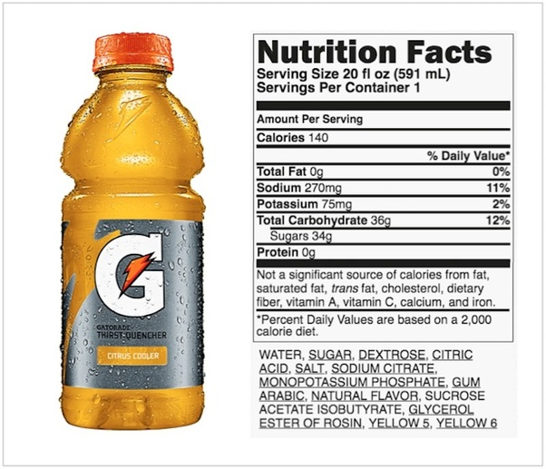

Electrolytes : An Overview
An explanation of what electrolytes are, their uses in the body, and the best replenishment methods for them.

An explanation of what electrolytes are, their uses in the body, and the best replenishment methods for them.
Before we can understand whether or not sports drinks are necessary, we must understand how electrolyte balance works. Electrolytes must be in the body in a certain quantity. Too little of a certain electrolyte, and it can't maintain its function. Too much, and it does the reverse of what its supposed to do. For example, too much potassium can cause an irregular heartbeat rather than keeping a steady one.
Let's take one of the most prominent sports drinks, gatorade, and look through its ingredients list. It has quite a lot of sodium, potassium, and if we look at the bottom, we can see some phosphate. However, we see quite a lot of sugar : 34 grams. Looking back at the sodium amount, is 270 mg too much?
Sports drinks are not the right thing to be drinking for most people after a workout. Average people do not need any extra electrolytes after a workout because they didn't really do enough of a workout. Thus, in most cases the extra electrolytes aren't really necessary. Gatorade, or any sports drink will never beat water in hydration. Water is going to be the best drink for hydrating yourself after a workout, no matter what. Gatorade has processed sodium, making it much more potent, and somewhat extra. Due to the processing, it lacks the trace minerals that natural salt might have. So in a sense, most of sports drinks big wins are really their big losses.